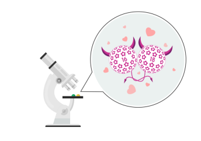
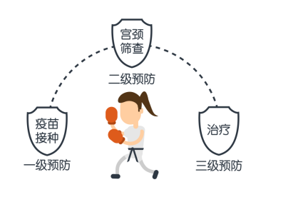
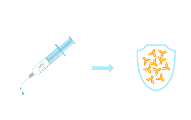
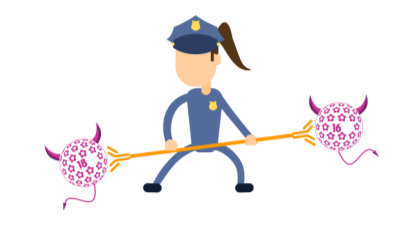

女子“防”身术，你学了吗？
天灾意外、男朋友出轨、爱豆突然传出婚讯……这世上，有太多事情发生地猝不及防。还有宫颈癌，这一威胁女性生殖系统健康的第一杀手，不知道什么时候就会盯上你……作为一个女孩子，不学点“防”身术，真有点Hold不住呢~
女子“防”身术第一步，知己知彼，方能百战不殆。
想要预防宫颈癌，首先我们要了解宫颈癌是由什么引发的。
1983年，豪森博士经过缜密检测，层层抽丝剥茧，首次从宫颈癌活检组织中分离出HPV16型病毒，将其列为宫颈癌致病原因怀疑对象。
1984年，他成功克隆出HPV16型和18型病毒基因组，发现某些类型的HPV感染与宫颈癌之间存在着直接的因果关系。

2008年10月6日，凭借发现HPV是导致宫颈癌病因的成就，豪森博士获得该年度诺贝尔生理学/医学奖。此处应有掌声！
“凶手”已被找到，接下来我们该怎么办？就这样坐以待毙吗？就这样眼睁睁看着HPV病毒们恣意妄为吗？当！然！不！是！
女子“防”身术第二步：一个问题多种对策。
据世界卫生组织（WHO）推荐，针对不同年龄阶段的女性，预防宫颈癌的策略主要包括两种：一级预防——疫苗接种，二级预防——宫颈筛查。

对于年轻女性来讲，HPV疫苗接种的主要目的是防止HPV感染，建立免疫保护，预防宫颈癌。
女子“防”身术第三步：直击要害，正面出击。

当你接种了HPV疫苗后，它就可以产生相应的抗体。

当HPV病毒再次入侵时，这些抗体便会再次被召唤出来，牺牲小我，与HPV病毒相结合，将其带出体外，进而达到消灭病毒的目的。好！腻！害！

值得一提的是，宫颈癌预防疫苗马上就要来到中国啦！有了HPV疫苗的保护，妈妈再也不用担心我的身体啦！18-26岁的年轻女孩们千万不要错过哦~